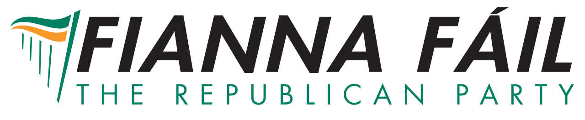
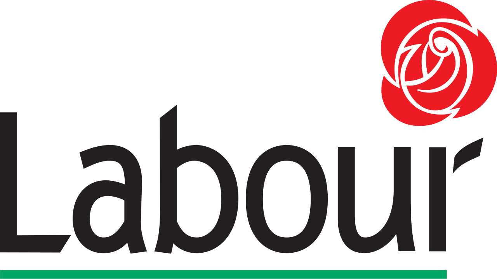

Politics in Ireland
Fianna Fáil
Fianna Fáil, also known as The Republican Party, is a centrist to centre-right and conservative political party in the Republic of Ireland. It was founded as an Irish republican party on 23 March 1926 after a split in Sinn Féin on the issue of abstentionism. Fianna Fáil's name is traditionally translated into English as Soldiers of Destiny, although a more accurate rendition would be Warriors of Fál ("Fál" being a legendary name for Ireland). Historically, Fianna Fáil has been seen as to the left of Fine Gael and to the right of Sinn Féin and the Labour Party. It is generally seen as a "catch all" populist party, representing a broad range of people from all social classes. Fianna Fáil has led governments including parties of the centre-left (Labour and the Green Party) and of the centre-right (the now-defunct Progressive Democrats). It has been led by Micheál Martin since January 2011.
Read moreFianna Gael
Fine Gael, meaning Family or Tribe of the Irish) is a liberal-conservative and Christian democratic political party in Ireland. Fine Gael is the largest party in Ireland in terms of members of the Oireachtas and Irish members of European Parliament. The party has a membership of over 35,000, and is the senior partner governing in a coalition with the Labour Party, with the Fine Gael party leader Enda Kenny serving as Taoiseach. Kenny has led the party since 2002. Fine Gael was founded on 8 September 1933 following the merger of its parent party Cumann na nGaedheal, the National Centre Party and the National Guard (popularly known as the "Blueshirts", a name still used colloquially to refer to the party). Its origins lie in the struggle for Irish independence and the pro-Treaty side in the Irish Civil War and Michael Collins, in particular, is often identified as the founder of the movement. Fine Gael is generally considered to be more of a proponent of market liberalism than its traditional rival, Fianna Fáil. Fine Gael describes itself as a "party of the progressive centre" which it defines as acting "in a way that is right for Ireland, regardless of dogma or ideology".
Read moreSinn Féin
Sinn Féin is an Irish republican political party active in the Republic of Ireland and Northern Ireland. The name is Irish for "ourselves" or "we ourselves", although it is frequently mistranslated as "ourselves alone". The Sinn Féin organisation was founded in 1905 by Arthur Griffith. It took its current form in 1970 after a split within the party (the other party became the Workers' Party of Ireland), and has been historically associated with the Provisional Irish Republican Army (IRA). Gerry Adams has been party president since 1983. Sinn Féin is the second-largest party behind the Democratic Unionist Party (DUP) in the Northern Ireland Assembly, where it has four ministerial posts in the power-sharing Northern Ireland Executive, and the third-largest party in the Oireachtas, the parliament of the Republic. Sinn Féin received the second highest number of Northern Ireland votes and seats in the 2015 Westminster elections, behind the DUP.
Read moreLabour Party
The Labour Party (Irish: Páirtí an Lucht Oibre), is a social-democratic political party in the Republic of Ireland. The Labour Party was founded in 1912 in Clonmel, County Tipperary, by James Connolly, James Larkin and William O'Brien as the political wing of the Irish Trade Union Congress.
Unlike the other main Irish political parties, Labour does not trace its origins to the original Sinn Féin; however, it merged with Democratic Left which does trace its history back to Sinn Féin. At the 2011 general election it gained 37 of the 166 seats in Dáil Éireann, almost double its total of 20 at the 2007 general election, making it the second-largest political party in the 31st Dáil.
The Labour Party has served in government for a total of nineteen years, six times in coalition either with Fine Gael alone or with Fine Gael and other smaller parties, and once with Fianna Fáil, giving it the second-longest time in government of Irish parties, next to Fianna Fáil. On 9 March 2011 it became the junior partner in a coalition with Fine Gael for the period of the 31st Dáil. The current party leader is Joan Burton, elected in July 2014 alongside Alan Kelly as deputy leader. Burton is the current Tánaiste (deputy prime minister).